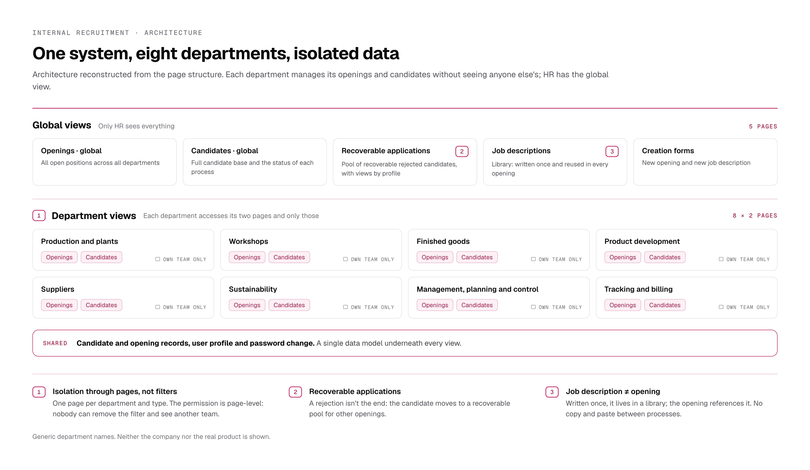
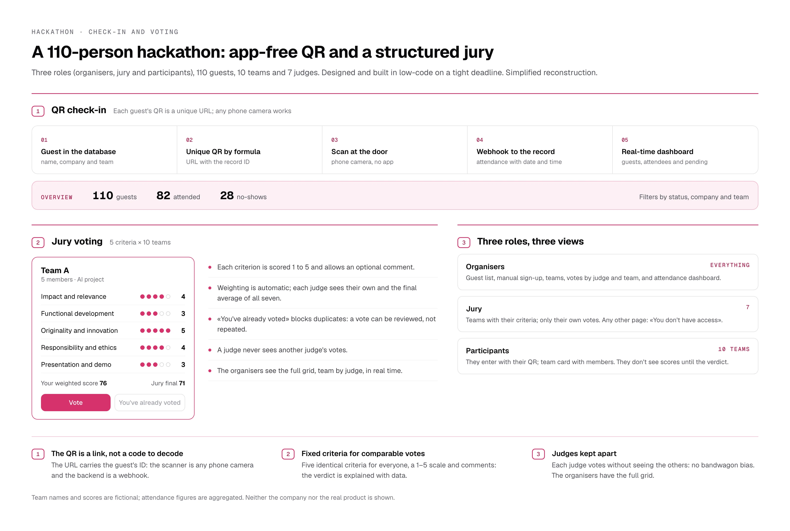

Internal recruitment platform for a multinational
An industrial multinational needed eight departments to run their own hiring processes in a single system, without any of them seeing the others' candidates, while HR kept the global view. Around 2,000 candidates, an average of 5 openings per department per month and about 20 people using it every day.

Isolation through pages, not filters
Each department has its own openings and candidates pages, with permissions at page, block and field level. Nobody can «remove a filter» and see another team. The admin sees everything.
Recoverable applications
A rejected candidate doesn't disappear: they move to a recoverable pool for other openings, with views by profile (Product Owner, Quality). The hiring effort gets reused.
Job description separate from the opening
Descriptions live in a library and are written once; each new opening references them from a creation form. No copy and paste.
A 110-person hackathon: QR check-in and jury voting
A large company was running a hackathon with 110 guests, 10 teams and 7 judges, and needed to control attendance at the door and collect votes in a comparable way, on a tight deadline. Three roles: organisers, jury and participants.

A QR code that is a link, not a code to scan
Each guest gets a QR code encoding a unique URL with their ID. Any phone camera opens it; a webhook marks attendance and the organisers' dashboard updates instantly. No app, no scanner, no code. On the day: 82 of 110 checked in.
Five fixed criteria for comparable votes
Impact, functional development, originality, responsibility and ethics, and presentation; a 1–5 scale and a comment per criterion. Weighting is calculated automatically. The verdict is explained with data.
Judges kept apart
A judge never sees another judge's votes and «You've already voted» prevents duplicates; the organisers see the full team × judge grid in real time.
Other internal tools and systems
- LMS platforms for student and training management.
- Survey and feedback systems (NPS, 360° reviews).
- Applicant tracking system (ATS) with AI CV parsing: the team went on to process three times as many applications per day.
- Data dashboards and reporting interfaces for management.
What I'd do differently
For the recruitment platform I know how many candidates, departments and people used it, but not how much time-to-hire dropped or how many recoverable applications ended up in another opening. Today I'd define that before delivery.